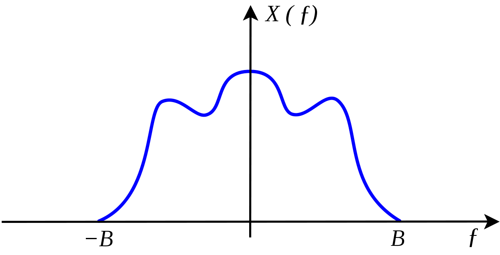
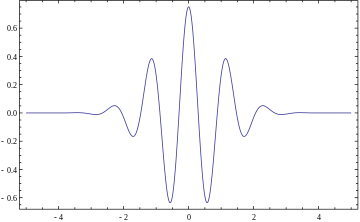
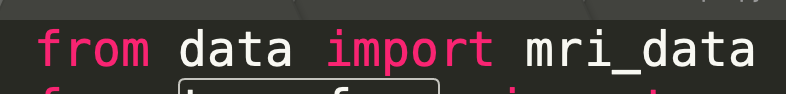
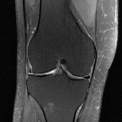

Ray's Research Journal
Welcome to the research journal of Raymond Feng
Running Jo Schlemper's Code
April 3rd, 2019
- Stable Signal Recovery from Incomplete and Inaccurate Measurements The canonical CS paper.
Reading More Papers, trying to figure out what to do...
April 3rd, 2019
- Stable Signal Recovery from Incomplete and Inaccurate Measurements The canonical CS paper.
- Miki Lustig Thesis
- Machine Learning Using the BART Toolbox - Implementation of a Deep Convolutional Neural Network for Denoising
- ESPIRiT — An Eigenvalue Approach to Autocalibrating Parallel MRI: Where SENSE meets GRAPPA
- Introduction to Compressed Sensing
- Deep learning for undersampled MRI reconstruction
- Highly Scalable Image Reconstruction using Deep Neural Networks with Bandpass Filtering
- Deep convolutional neural networks for accelerated dynamic magnetic resonance imaging
- An overview of deep learning in medical imaging focusing on MRI
- Compressed Sensing MRI Using a Recursive Dilated Network
- Highly Scalable Image Reconstruction using Deep Neural Networks with Bandpass Filtering
- V-Net: Fully Convolutional Neural Networks for Volumetric Medical Image Segmentation
- A Deep Cascade of Convolutional Neural Networks for Dynamic MR Image Reconstruction
- Convolutional Recurrent Neural Networks for Dynamic MR Image Reconstruction

Shannon-Nyquist Sampling Theorem
April 1st, 2019
- We want to store an analog signal on a digital computer. Trade off is, the higher number of samples, the more storage we will have to use.
- Which is the minimum necessary sampling frequency for a given type of signal, that will not distort the underlying information and/or allow its accurate reconstruction?
- Nyquist-Shannon Sampling Theorem: The minimum sampling frequency of a signal that it will not distort its underlying information, should be double the frequency of its highest frequency component.
Run Singlecoil Unet Training on Bridges
March 30th, 2019
- Downloaded singlecoil_train/val/test and chmod'ed with everyone.
- Create conda virtual environment, and used pip to install requirements.txt, conda doesn't work for pytorch for whatever reason.
- Clone the fastMRI github into my pylon5.
- Modify .bash_profile, include: export PYTHONPATH=path/to/fastMRI
- Run the following script:
- Used about 50 units of Culich's allocation.
- Submitted batch job on RM-small to do 8 hours of data download for multicoil data...just in case.
- Unet Papers: https://arxiv.org/pdf/1505.04597.pdf
- https://arxiv.org/pdf/1411.4038.pdf
#!/bin/sh
#SBATCH -p GPU
#SBATCH -t 02:00:00
#SBATCH -N 1
#SBATCH --gres=gpu:p100:2
module load anaconda3
source activate python3
module load cuda
cd /pylon5/ca4s8fp/raymond8
python fastMRI/models/unet/train_unet.py --challenge singlecoil --data-path /pylon5/ca4s8fp/raymond8 --exp-dir checkpoints --num-epochs 5
Wavelets
- https://www.eecis.udel.edu/~amer/CISC651/IEEEwavelet.pdf
- https://arxiv.org/pdf/math/9304214.pdf
- Define: Mathematical functions that cut up data into different frequency components, and then study each component with a resolution matched to its scale.
- Fundamental Idea: Analyze according to scale, see both the forest and the trees. To do this, we modify the original idea of Fourier by using different basis functions, other than just sines and cosines.
- Basis functions, by definition, need to be orthogonal, and ideally should have the same magnitude.
- Analyzing wavelet/Mother wavelet: a wavelet prototype function.
-
Fourier tells us any $2\pi$ periodic function $f(x)$ is representable by $a_0+\sum_{k=1}^{\infty}(a_k\cos(kx)+b_k\sin(kdx))$
We calculate the Fourier coefficients by:
$a_0=\frac{1}{2\pi}\int_{0}^{2\pi}f(x)dx, a_k=\frac{1}{\pi}\int_{0}^{2\pi}f(x)\cos(kx)dx, b_k=\frac{1}{\pi}\int_{0}^{2\pi}f(x)\sin(kx)dx$ - Windowed Fourier Transform localizes the signal in time. The Fast Fourier Transform is faster.
- Wavelet basis functions are localized in space.
- The Discrete Wavelet Transform: Dilations and translations of the "Mother function" or "analyzing wavelet" $\Phi(x)$ define an orthogonal basis, our wavelet basis: $\Phi_{(s,l)}(x)=2^{-\frac{s}{2}}\Phi(2^{-s}x-l)$. $s,l$ give the scale and location of the basis function respectively.
- To span our data domain at different resolutions, the analyzing wavelet is used in a scaling equation: $W(x)=\sum_{k=-1}^{N-2}(-1)^kc_{k+1}\Phi(2x+k)$. Here, $W(x)$ is the scaling function for the mother function $\Phi$, and $c_k$ are the wavelet coefficients.
- The wavelet coefficients must satisfy linear and quadratic constraints of the form: $\sum_{k=0}^{N-1}c_k=2,\sum_{k=0}^{N-1}c_kc_{k+2l}=2\delta_{l,0}$. Where $\delta$ is the delta function and $l$ is the location index.
Martingales
- http://www.columbia.edu/~ks20/stochastic-I/stochastic-I-MG-Intro.pdf
- Not really relevant to research.
- Uniform Integrability...
Learn XSEDE
March 19th, 2019
- Aaron responded with XSEDE login info
- Ran singlecoil unet locally, very slow
- Asked Aaron to upload more data to XSEDE
- Still attempting to get hands on multicoil data
- Got XSEDE set up, more or less
- How to: Use the ondemand platform
- Upload the facebook fastMRI repository along with a couple of data points to the platform
- Some minor modifications: reimplement fft and ifft in transforms.py using functions from scipy.fftpack (because MKL is tricky)
- In requirements.txt:
- Set torch==0.4.1.post2 to torch==0.4.1
- Delete certifi==2018.10.15 because XSEDE nodes already has it and doesn’t want to uninstall it
- Module load anaconda3, create a conda virtualenv with python version 3.6
- Activate the virtualenv and pip install -r requirements.txt
- Environment is set up, now just need to learn how to write SBATCH directives and a small handful of other things for scripting jobs (I’ve got a sample script for that)

Reading Sherman's Paper
March 9th, 2019

Reading Signal Processing Papers
March 4th, 2019
- Unsupervised Learning of Structured Radio Communication Signals
- "We explore unsupervised representation learning of radio communication signals in raw sampled time series representation."
- Unsupervised Learning: Learning without labels, PCA, KNN
- Representation Learning: Learning features...?
- Time Series: Signals...basically, discrete, because it is sampled.
- Modulation Basis Functions: Not sure what modulation is. Basis functions as in when you have a p-periodic signal in discrete time, we can decompose the signal as a linear combination of p basis functions...? Analytic bases vs
- Autoencoder: Type of NN that learns its own weights.
- Gabor filter as a basis function. This makes sense, in DT, basis function can be represented as a vector that is determined by impulse response. Filters are defined by their impulse responses.
- $r(t)=e^{j*n_{Lo}(t)}\int_{\tau=0}^{\tau_0}s(n_{Clk}(t-\tau))h(\tau)+n_{Add}(t)$. Seems like $h(\tau)$ is impulse response and it is being convolved with something, and there is additive noise. Not sure what Clk noise implies.
- Seems like

Installing BART
February 27th, 2019
- Downloading Xcode, 5.8gb
- Running Xcode setup: https://github.com/mrirecon/bart/blob/master/README

Downloaded singlecoil_test.tar
February 17th, 2019
- Downloaded singlecoil_test.tar, SSD is too small to download the other datasets.
- Unzipped the TAR file
- Ran the supplied data_loader_sample code
- The SliceData class in mri_data is a wrapper, which loads in the data.
- SliceData objects have a __len__ function and __getitem__ function
- __getitem__ returns a transformed version of the data, somehow related to k-space
- What is a "kspace tensor"?
Attempting to Understand k-space
- k-space is an array of numbers representing spatial frequencies in a the MR image.
- what are "spatial frequencies"?
- "K space is the Fourier Transform of the k-space image"
- "Fourier Plane", "Optical Fourier Transform", "artifacts"
- Following this tutorial: https://www.ncbi.nlm.nih.gov/pmc/articles/PMC3097694/
- Installed Matlab using school license.
- The relationship between k-space data and the image is the Fourier Transformation
- Michael Lustig's Website is very informative

Cloning the Git Repo, Looking at the Code
February 14th, 2019
- Cloned the GitHub repo
- Issue: mkl-random, pytorch, had to be installed manuall.
- NOTE: When running the data off a hard drive/usb drive, the USB drive should be formatted correctly.
- Applied for dataset access
- This smallest single coil test is 80GB...how do I do this...
- Downloading singlecoil_test.tar...eta 2 hours
- Looking through FAIR code
- Download of dataset failed multiple times

Reading fastMRI Paper
February 13th, 2019
- Want to speed up MRI to make patient experience better, cheaper.
- Hardware, compressed sensing, software, parallel imaging, ML all make MRI faster.
- One issue is that there is not a unified single large dataset! Can't reproduce results.
- 1594 volumes, 56987 slices. 10,000 knee examinations, 1.2 million slices.
- Direct vs indirect imaging. MR is an indirect technique. Instead of reading spatial measurements, takes phase and frequency measurements.
- Magnetic field varies with time and space, the body the produces a response, the reciever coil measures it.
- Imaged body represented by Multidimensional Fourier Space known as k-space.
- $\hat{m} = \mathcal{F}^{-1}(y)$ Is known as the inverse Fourier Transform. $\hat{m}$ is the noise corrupted estimate of true image $m$.
- Partial Solution: Lower maximum frequency, but results in lower spatial resolution. Omit some k-space samples within a certain maximum frequency range, but this results in aliasing artifacts. Need to use reconstruction techniques in order to remove artifacts.
- Parallel MR Imaging: multiple receiver coils, each producing different k-space measurement matrix. Each coil measures the different MR signal from different regions.
- A mouthful: Each coil measures Fourier components of the imaged volume multiplied by a complex-valued position-dependent coil sensitivity map $S_i$. The following equation represents the measured $k$-space signal $y_i$ for coil $i$ in an array of $n_c$ coils. The multiplication is entrywise.
- $\hat{m} = \mathcal{F}(S_i m)+\text{noise}$ is the equation for Parallel MR Imaging.
- Nyquist-Shannon Sampling Theorem: Establishes a sufficient condition for a sample rate that permits a discrete sequence of samples to capture all of the information from a continuous-time signal of finite bandwidth.
- Each coil generally sensitive in one position, and not so much in others.
- Sensitivity maps known, and $k$-space sampling full $\Rightarrow$ Satisfies Nyquist sampling condition $\Rightarrow$ set of linear relations defined between $m$ and each $y_i$ defines a linear system overdetermined by a factor of $n_c$
- We solve this system of equations using a pseudoinverse operation, resulting in the least norm least squares reconstruction of $m$(???). This will work so long as the linear system is full rank. Reconstruction quality dependent on signal to noise ratio.
- Accelerated parallel imaging: Each coil's $k$-space is undersampled. Total number of measurements across all coils exceeds the number of image voxels to be reconstructed $\Rightarrow$ unregularized least squares solution viable $\Rightarrow$ $n_c$-fold speedup.
- Voxel: A pixel, but in 3-d space...kinda...?
- There is so much MRI specific jibber jabber in English that I don't understand...and they don't explain.
- Classical MRI Reconstruction: "Solve a regularized inverse optimization problem to find the spatially resolved image from the sub-sampled k-space data"
- The ML approach gives us: $\hat{m}=B(y)$, where we learn the reconstruction function $B$ through sampled pair tuples $(y,m)$ drawn from a population. I am going to assume here that $y$ is the signal from the MRI process, and the $m$ is the complete reconstruction using classical (slow) techniques, $m$ is the true image.
- We want to find the $B$ that minimizes expected loss over a population distribution, this is empirical loss minimization.
- $B^*=\text{argmin}_B R(B)$ where $R(B)=\mathbb{E}_{(y,m)}[L(B(y),m)]$
- Of course we cannot minimize actual risk, so we work with the proxy of empirical risk: $R_{empirical}(B)=\frac{1}{n_{data}}\sum_{i=1}^{n_{data}}L(B(y^{(i)}),m^{(i)})$
- Datasets big enough to do signal processing, but not Deep Learning.
- To be continued.

Ray's Research
Read, Learn, Research, Repeat. Mentored by Maryam Vareth, Berkeley Institute of Data Science, making MRI faster. Also home to miscellaneous deviations into interesting things!